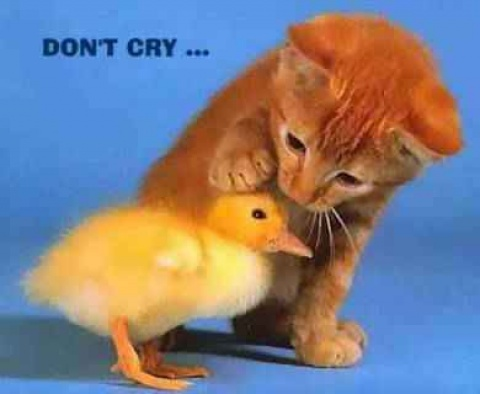

the story is about a romantic love between two ordinary people. The girl name is Chang Ee and her husband name is Hou Yi. Hou Yi was famous of shooting off the extra 9 suns so that the temperature on earth become warm and normal instead of being hot. After Hou Yi succcessed, he married Chang Ee and started their simple and romantic love life.
here is the Chinese version of this storyShe was the most beautiful and kind people in this town, and people admire this couple a lot. One day, the celestial being bump into Hou Yi, in order to show the appereciation for him shooting the extra suns, The Queen Mother offered Hou Yi a magical pill which could help him to become immortal and powerful. However, Hou Yi loves his wife Chang Ee and his life, so he did not eat it, instead, he asked Chang Ee for taking care of this pill.

Unfortunately, this message was heard by a man called Peng Meng. He was a selfish people, he wanted to own this immortal pill by himself. Thus, he pretended he was sick and stayed at Hou Yi's place. When Hou Yi had work to do and went out, Peng Meng threatedned Chang Ee with knife and forsed her to give out the immortal pill. Chang Ee known that once a powerful pill like this eaten by a awful man like Peng Meng, the world gonna be in a mess. Under this situation, the first thought came to Chang Ee was to eaten this pill by herself, to sacrifiecd herself instead of the majority of people.
 here is the video about this love storyAfter Chang Ee had the pill, she felt light and without gravity, he gradually began to fly, and became more and more far away from the earth. Due to the love between Chang Ee and Hou Yi, she stopped on the closet planet to earthe-- the moon, for wathing Hou Yi and thinking of him apart. Because this action of Chang Ee was very moved and generous, people wanted to thanks for her and remembering her, thus on every 15th of May, it become a festival called the Mid-Autumn Festival when the Moon has the clpostest distance to erarth, meaning that Chang Ee misses home too much and this is the day Chang Ee went back on earth and spent her time with Hou Yi every year.